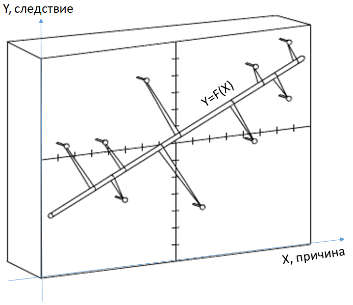

Может ли существовать и нормально функционировать система, в которой цели, или средства, или информация … не являются общими?
Пчёлы в улье. Пчёлы взаимозаменяемы: средства одинаковые - крылышки, цели и информация о температуре в улье – одинаковая. Пчёлы могут снизить температуру в улье, вращая
крылышками. Каждая пчела самостоятельно ведёт разведку нектара, в танце сообщая другим пчёлам лучшие места сбора мёда. Улей прекрасный пример децентрализованной системы.
Пожарная команда. Цель единая – потушить пожар, средства разные – лестница у одного, брандспойт – у другого, багор – у третьего. Информация по радиосвязи одинаковая для всех.
Команда успешно тушит пожары.
Такси. Средства и информация у всех едины – автомобиль и сотовая связь. А цели разные – у каждого свой клиент, выручка у каждого своя. Таксопарк успешно работает.
Примеры можно продолжить.
То есть системы из однородных элементов успешно функционируют. Кроме того, часто они возникают сами по себе, как мировое сообщество филателистов, которое никто не создавал, или всемирная телефонная сеть, у которой нет одного изобретателя.
Конечно, свои достоинства есть и у централизованных систем. Армия подчиняется единому командованию, поэтому приказы в ней не могут быть противоречивыми. Но надежность у децентрализованной системы выше. Выход из строя одного телефона не ставит под угрозу всю сеть, а вывод из строя командира ставит под вопрос выполнение задачи целого подразделения. Скорость реагирования и разнообразие реакций у децентрализованной системы тоже выше.
Рассмотрим преимущество децентрализации в вычислительной технике. Подумайте, сколько надо действий проделать, чтобы отсортировать массив чисел, сравнив каждое число с каждым. Цифровая вычислительная машина (последовательная алгоритмическая машина фон Неймана) работает как игольное ушко для алгоритмов, которые представляют собой последовательность действий. Однако стул, стол, окно в окружающем нас мире существуют параллельно.
Одна из самых затратных задач – сортировка массива чисел, например, упорядочение их по возрастанию. Для её решения на машине фон Неймана надо сравнить каждое число с каждым, из содержащихся в массиве.
Используя идею параллельности, попробуем решить задачу сортировки чисел быстрее. Возьмём пачку макарон и отломим от каждой макаронины лишнее, чтобы оставшаяся длина была
равна очередному числу из массива. Зажмём макароны в кулак и резко ударим им по столу.
Остаётся только считать ответ. Ладонью другой руки нащупаем сверху самую длинную
макаронину и уложим её в выходной массив первой. Потом найдем вторую по длине и так далее. Массив из
N чисел отсортирован за один такт, еще
2N тактов ушло на ввод и вывод
чисел. Последовательная машина для сортировки должна сравнить каждый элемент массива с каждым, затратив на это
2N действий.
Знакомую нам задачу построения закономерности методом регрессионного анализа представим, как гвоздики, вбитые в доску по заданным координатам исходных точек.
Оденем аптекарские резинки на каждый гвоздик, протянем сквозь все резинки линейку и отпустим её. Линейка встанет в среднее положение, обозначив собой искомую зависимость.

Алюминиевая балка, защемлённая на одном конце, длиной 3 метра прогнётся под собственным весом, второй её конец на шкале покажет отклонение от оси балки
34=81 сантиметр.
Получился аналоговый калькулятор вычисления корня четвёртой степени.
Найдём наилучшее положение на местности завода, который использует сырьё из одного места, топливо из другого, рабочую силу из третьего. Если привязать гирьки ниточками к кольцу, имитирующему искомое положение завода,
а ниточки продеть в дырки на карте, где расположены источники сырья, то, поелозив, кольцо укажет оптимальное место расположения завода.
Только надо, чтобы гирьки были весом, равными стоимости доставки нужного количества сырья на единицу продукции за километр.
Сообщающиеся сосуды с налитой в них водой разной высоты h1,h2,h3,…,hn легко покажут среднее арифметическое чисел:
(h1 + h2 + h3 + … + hn)/n.
Найдём корни уравнения ax3+bx2+cx+d=0 с помощью аквариума. Положим на противоположные края аквариума опору и перпендикулярно к ней установим
коромысло. На расстояниях a,b,c,d от опоры расположим на подвесах грузики. При положительном значении коэффициента – справа от опоры, при отрицательном – слева.
Сами грузики представляют собой тела вращения – шар (свободный член уравнения), цилиндр (первая степень), конус (вторая степень), параболоид (третья степень).
При погружении в воду грузики вытесняют жидкость. Равновесие системы зависит от плеча подвеса и степени погружения тел в воду. Постепенно наливаем в аквариум воду до
установления равновесия весов.
Уровень воды – корень уравнения. Несколько корней уравнения – несколько состояний равновесия системы.
Представим каждую букву алфавита как двоичный код. Запишем содержимое всех книг в мире в виде длинной последовательности двоичных цифр и поставим ноль с запятой перед нею.
Вся информация человечества – это одно дробное число, которому соответствует одна точка на оси координат. Осталось взять палку длиной
1 метр и сделать на ней зарубку
по координатам этого числа, считая начало палки за
0, а конец за
1.
Можно точно синхронизировать во времени работу неограниченного количества элементов. Представим себе цепь стрелков, каждый из которых может передать команду двум своим соседям справа и слева. Крайний стрелок подает команду А и она передаётся по цепи от одного
к другому. Натыкаясь на конец цепи, команда отражается и передаётся по цепи обратно. Одновременно с командой А первый стрелок подаёт команду В, которая движется в три раза медленнее.
Тогда два сигнала А и В встретятся в середине цепи. Первое правило: «пришла команда, передай дальше». Второе правило: «если передавать дальше некому, верни команду назад».
Третье правило стрелков гласит: «если пришло сразу два сигнала, передай эти сигналы в обе стороны». Через небольшое время все стрелки цепи окажутся в одном состоянии, это и будет
признаком того, что они синхронизированы. При этом переход стрелков в искомое состояние носит лавинообразный характер.
Подобный механизм нам хорошо знаком – распространение модных трендов, слухов.
Биолог и кибернетик Д.Х. Конвей придумал замечательную простую по правилам и сложнейшую по наблюдаемому поведению игру «Жизнь». Представим себе поле из клеток. Каждая клетка может быть живой и неживой. Клетка оживает, если у неё рядом будет не менее А и не более В соседей. Живая клетка погибает, если у нее более А или менее В соседей.
Конвей соотнёс это правило с законом перенаселения в природе и недостатком особей для выживания. Распределение состояния клеток в поле при начальном распределении живых-неживых ведёт себя сложнейшим образом. Конгломераты клеток определённой конфигурации движутся, нападают на другие сообщества, исчезают, рождаются. Всё как в природе. Но много лет программисты всего мира ассоциируют это поле с машиной из однородных клеток. Найдена конфигурация клеток, генерирующая перемещающиеся структуры (их назвали биты). Есть пожиратель битов, есть бесконечно работающие светофоры. При этом генераторы и другие структуры могут устанавливаться и возникать где угодно и в любых количествах. А не как в традиционных машинах – каждый агрегат на своём месте. Поле выглядит как машина, где все её агрегаты плавают. Сама клетка среды чрезвычайно проста для изготовления в тираже и такую среду можно производить квадратными километрами, покупать и наращивать в любом количестве под сложность задачи.
Дальнейший замысел состоит в том, чтобы научиться программировать такую конфигурацию клеток в среде Конвея, чтобы на ней получался бы такой же результат, какой мы получаем на классической машине архитектуры фон Неймана.
Видимо, кто-то в мире уже конструирует такие машины. В проекте «Минимального генома» команда Крейга Вентера систематически удаляла гены у живой бактерии в поисках минимального набора генов, необходимого для жизни.
В конце концов Вентер синтезировал простейший организм, способный к размножению, с результатом 382 гена. В 2010 году Вентер заявил о создании им искусственной клетки,
пересадив ДНК в клетку Mycoplasma genitalium. Первый в мире искусственный организм (синтетическая бактерия) получил имя Синтия (англ. - Cynthia). Искусственная
бактерия sin_3.0 имеет 482 гена и состоит из последовательности 580 000 спаренных оснований, живет в искусственной среде и является базой для следующих организмов.
Обобщением игры Конвея являются DRSM-автоматы, вычислительные структуры будущего. Клеткой среды является простейшая машина, которую можно себе представить, с
параметрами: D – размерность пространства среды, R – количество соседей (количество связей автомата), S – количество состояний ячейки (автомата),
M – размер памяти автомата. Конвей в игре «Жизнь» экспериментировал с автоматом DRSM(2,8,2,2). Но это не значит, что других вариантов вычислительных
сред быть не может. Преимуществом таких однородных сред является простота их производства в тираже и то, что любая система в любом количестве может быть построена в любом
месте пространства, – построение программы дело самой программы. Поведение такой системы может быть бесконечно сложным, что открывает возможность решения на них нужных нам
задач. В ЛЭТИ (г. Санкт-Петербург) в лаборатории профессора В.И. Варшавского строились DRSM-структуры, способные умножать числа друг на друга в любом месте
вычислительного поля.
Достаточно правильно построить правила автомата, которым одинаково подчинялись бы все клетки такой структуры, - подать свой сигнал вправо, влево,
верхнему соседу или нижнему при определённых сигналах от соседей. После расположения в соседних полях сомножителей результат умножения появлялся сам по себе в соседних
клетках. Тот, кто попробует умножить друг на друга два числа в двоичном представлении, быстро увидит, как появляются копированием и поразрядно смещаются отдельные двоичные
слагаемые, постепенно суммированием превращаясь в конечный результат. В ограниченном месте пространства среды возникает ответ. Система может организовать любую операцию в
любом месте в любом количестве
Такой средой и элементом для нас являются нейроны головного мозга.
Задания
- Загрузите с сайта упражнение «игра Жизнь». Просмотрите типовые клеточные конфигурации и их поведение на поле игры. Попробуйте задать свои конфигурации клеток, способные размножаться.
- Загрузите с сайта упражнение «Аквариум». Изменяя положение грузиков, соответствующее коэффициентам уравнения, и уровня воды, добейтесь равновесия коромысла. Выпишите и проверьте ответы – значения корней многочлена.
- Посмотрите на модели, как находятся значения корней многочлена методом Лиля. Задайте коэффициенты многочлена, найдите методом Лиля его корни.
- Загрузите с сайта упражнение «DRSM-автомат». Понаблюдайте, как среда из клеток умножает два числа друг на друга. Перенесите числа в другую часть клеточного поля. Повторите эксперимент.